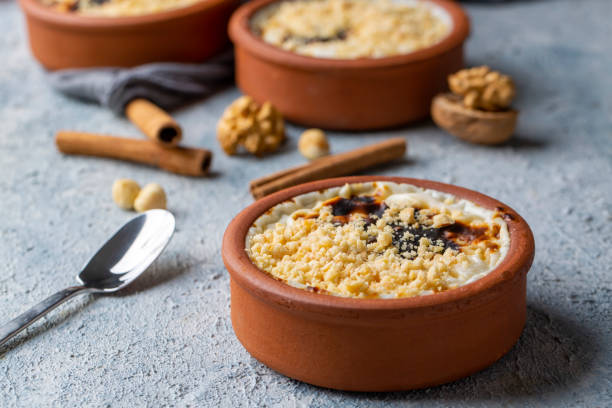

Kaç Kişilik : 4 Kişilik
Hazırlama Süresi : 15 Dakika
Pişirme Süresi : 10 dakika
Malzemeler
- 1 lt süt
- 2 çay bardağı pirinç
- 1 litre su
- 3 yemek kaşığı pirinç unu
- 1,5 -2 su bardağı toz şeker
- 1 su bardağı süt
- tarçın
Hazırlanışı
- Sütlaç yapmak için öncelikle pirinci yıkayıp su ile ateşe koyun.
- Pirinçler uzayıp suyu çekene kadar kaynatın, soğuk sütü ekleyin.
- 1-2 defa karıştırıp, kaynamasını bekleyin.
- Bu arada bir kasede pirinç ununu 1 su bardağı soğuk süt ile ezin.
- Tencerede kaynamakta olan sütten 1-2 kepçe alıp kaseye ekleyin. (pirinç unu ılınmış olmalı).
- Pirinç ununu tencereye ekleyin, ara sıra karıştırarak 10 dakika kadar pişirin.
- Toz şekeri ilave edip karıştırın ve 1-2 taşım kaynatın.
- Sütlacı kaselere paylaştırın.
- Soğuyunca sütlaçların üzerlerine tarçın serperek servis edebilirsiniz.
Afiyet olsun.